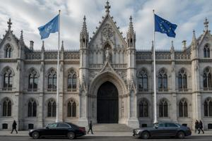
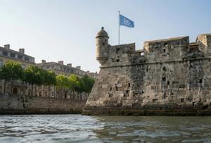
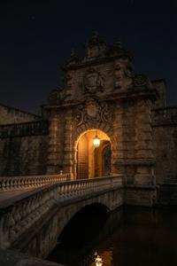
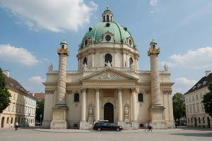
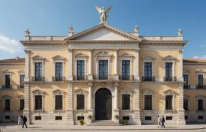
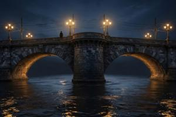

First District of Vronovica
{kind=link}

The First District (Prjevy okrug) comprises the historical core of Vronovica — the fortress and its closest surroundings. It has always housed the central institutions of civic, military, and ecclesiastical administration, with almost no residential or commercial fabric. Under the Habsburgs and all subsequent independent governments, it was exempt from municipal administration and subordinate directly to the state. Since 1995, it belongs to the Neutral Zone.
The Fortress
{kind=link}

The fortress — the Vronov Grod or simply Grod — is a five-bastion star fort constructed between 1692 and 1701 and remarkably well preserved. Its dressed-stone curtain walls descend directly into the waters of South Drava and Fortress Canal; the fortress is approachable only through three gated passages, each with an adjacent bridge.
The five bastions, listed clockwise from the north, are: Emperor Joseph Bastion (Jozsefova bastya), Emperor Leopold Bastion (Lipotova bastya), Empress Wilhelmine Bastion (Vilmina bastya), Prince Eugene Bastion (Enjova bastya), and Archduke Karl Bastion (Karlova bastya). Three of the five curtain walls are broken by gates with adjacent bridges. The Buda gates (Budajska vrota) pierce the curtain between the Joseph and Leopold bastions, opening toward the road to Budapest, with the Buda bridge across the canal. The Turkish gates (Turska vrota) pierce the southern curtain between the Wilhelmine and Eugen bastions, with the Turkish bridge across South Drava. The Viennese gates (Beczka vrota) pierce the curtain between the Karl and Joseph bastions, facing the Vienna road with the Viennese bridge across the canal.
{kind=link}

Within the fortress, three streets run from each gate to a central triangular junction known as the Fortress Platz (Grodski Plac, or colloquially Plac). The principal buildings are arranged around the Plac: to the east stands St. Tibor's Cathedral; to the north, the Ban's Palace (Banov Polac), a mid-nineteenth-century neo-Gothic building now serving as the official residence of the UN High Commissioner; and to the west, the Episcopal Palace (Biskupski Polac), a late-eighteenth-century Classicist structure housing the Catholic diocesan administration.
Following the proclamation of the People's Republic in 1945, the fortress was assigned in its entirety to NOON. Its casemates and underground infrastructure served as detention and interrogation facilities. Civilian access to the island was prohibited throughout the socialist period. The democratization of 1990 re-opened the fortress, though most buildings — except St. Tibor's Cathedral, returned to the Catholic Church — remained state property and inaccessible. During the civil war, the fortress was sealed and held by an unidentified armed formation that maintained a studied neutrality. Following the Lausanne Agreements of 1995, it was transferred to the UN peacekeeping force and now accommodates various offices of the UN High Commissioner's apparatus.
Automobile access to the fortress island is restricted. Vehicles may enter only via the Buda bridge, by authorization pass issued by the UN High Commissioner's office. The Viennese and Turkish bridges carry pedestrian traffic only.
St. Tibor's Cathedral
{kind=link}

The cathedral is the most visited building on the fortress island. It was constructed between 1751 and 1755 to designs by the imperial court architect Nikolaus Pacassi. Pacassi modeled it on the Vienna Karlskirche — a form chosen to signal dynastic confidence in the new possession, at considerably smaller scale. The interior preserves mid-eighteenth-century frescoes by the Italian painter Giambattista Crosato, depicting the life of St. Tibor and the spread of Christianity to Upper Pannonia.
{kind=link}

Following the proclamation of the People's Republic, the cathedral was secularized and pressed into service as a NOON ceremonial hall. The religious imagery was overpainted with socialist-realist murals. Newly appointed officers took their oaths of loyalty before its former altar, pledging allegiance to Generalissimo Gowbka, the Communist Party of Upper Pannonia, and the people of the PRUP (in this order).
After its return to the Catholic Church in 1990, restoration has proceeded in stages. Most of the Crosato frescoes have been recovered, though traces of the overpainting remain visible in the vaults. In 2009 the cathedral was inscribed as a UNESCO World Heritage Site together with the fortress complex.
The Bridged Ring
{kind=link}

By the mid-nineteenth century the three gated fortress passages had become inadequate for the traffic volumes generated by the expanding city. The Bridged Ring (Mostovano Kolo), completed in 1874, provided a continuous bypass road encircling the fortress island. The Ring absorbed the city's principal traffic flows within a decade of completion. All subsequent expansion of the road network, including the tram lines of the 1880s and 1900s, was organized around the Ring rather than the original fortress-centered Y-configuration.
Described clockwise from the north: the northern arc is a public promenade quai running along the outer bank of the Fortress Canal. At its north-eastern end, the Ring widens into a circular junction where Jezda Enja Zslutovodyj branches off. This junction is named Enjo Zslutovodyj Square (Trug Enja Zslutovodyj). It is centered on a full-figure statue of the reformer, erected in 1926 — the single monument of the republican period to survive every subsequent change of administration without removal or renaming.
From the junction the Ring descends to the Spodny most (Lower Bridge), which crosses to the right bank of South Drava. Unusually for this city, both Ring bridges have kept their original names through every change of administration.
Along the southern arc on the right bank, the Ring passes three junctions serving the radial avenues of the southern city. From the western junction the Ring crosses via the Gorny most (Upper Bridge) to the northern bank, terminating at a circular junction with Slavjanska jezda known as Slavic Square (Slavjanski Trug).
All intersections of the Ring with the principal avenues are manned by the FUPFOR Police Division. The Ring and the adjacent blocks are enclosed within a wire-fenced perimeter; the junctions described above are the only authorized points of entry.
Categories: Vronovica, Districts of Vronovica